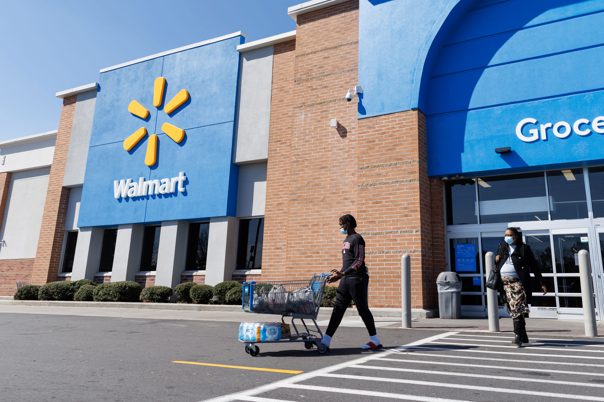

In this project, we focused on cleaning and manipulating Walmart store data using MySQL Server to ensure its accuracy, consistency, and readiness for analysis. After preparing the data, we conducted an exploratory data analysis (EDA) to uncover valuable business insights. The analysis revealed key trends in sales performance, customer behavior, and inventory management, providing actionable insights to optimize store operations and improve decision-making. By ensuring the data was clean and structured, the project highlighted the importance of data preparation in driving meaningful business outcomes.

This project utilized Power BI to analyze a dataset of over 5,000,000 commercial airline flights from 2015, compiled for the U.S. Department of Transportation (DOT) Air Travel Consumer Report. The analysis provided comprehensive insights into flight performance, including delays, cancellations, and on-time arrivals, while also uncovering seasonal trends and regional variations in air travel.
This project provides valuable insights into the sales dynamics of a coffee business, examining key factors such as peak sales periods, revenue growth trends, and distribution patterns across different locations. By analyzing transaction data, the project identifies trends in customer behavior, revealing how sales fluctuate throughout the year and the factors contributing to revenue growth.

This project explores the performance of electric vehicles (EVs) in Washington over several years, focusing on their progression and efficiency. By analyzing trends in EV adoption, energy consumption, and operational performance, the project provides valuable insights into how electric vehicles have evolved in the region.
.jpg)
This project presents an insightful analysis of Brazil's Olist E-commerce platform, showcasing its strong performance across several key metrics. The data reveals Olist's ability to attract a broad customer base, foster a thriving seller community, and generate substantial revenue.

This project focused on analyzing roller coaster data through exploratory data analysis (EDA) using Pandas. Key steps included comprehensive data cleaning, such as handling missing values, standardizing formats, and removing duplicates, to ensure data integrity.

This project involved analyzing an art gallery's dataset to provide valuable insights into its operations, addressing key business questions for decision-making. Using MySQL, I explored themes, sales, gallery operations, artist contributions, and artwork displays.